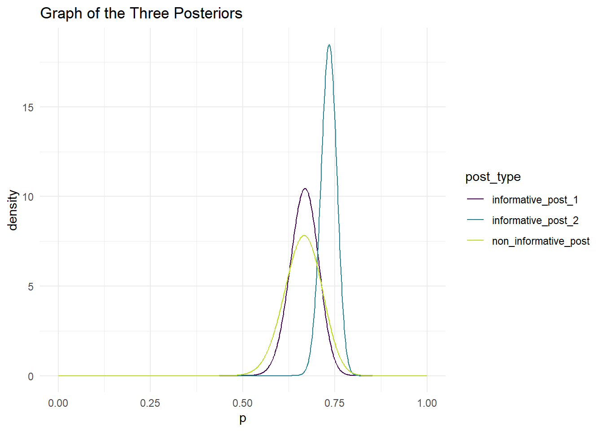

” I have followed all rules for collaboration for this project, and I have not used generative AI on this project. ~ Clayton Fogler ”
library(tidyverse)
── Attaching core tidyverse packages ──────────────────────── tidyverse 2.0.0 ──
✔ dplyr 1.1.4 ✔ readr 2.1.5
✔ forcats 1.0.0 ✔ stringr 1.5.1
✔ ggplot2 3.5.1 ✔ tibble 3.2.1
✔ lubridate 1.9.4 ✔ tidyr 1.3.1
✔ purrr 1.0.2
── Conflicts ────────────────────────────────────────── tidyverse_conflicts() ──
✖ dplyr::filter() masks stats::filter()
✖ dplyr::lag() masks stats::lag()
ℹ Use the conflicted package (<http://conflicted.r-lib.org/>) to force all conflicts to become errors
Rafael Nadal is arguably the greatest men’s clay-court tennis player ever to play the game. In this mini-project, I analyze the probability that Nadal wins a point on his own serve against his primary rival, Novak Djokovic, at the French Open (the most prestigious clay court tournament in the world). We will start by identifying and calculating 3 different priors.
Priors:
1) Non-informative Prior
Since we have no knowledge about Nadal’s playing skill, or even Djokovic, we will assume that there is a 50/50 chance that Nadal will win a point on his own serve against his rival Djokovic. Our non informative alpha and beta will both be equal to 1.
2) Informative Prior based on clay-court match the two played in the previous year (Nadal won 46 out of 66 points on his serve. The standard error of this estimate is 0.05657)
Since we know he won 46 our of 66 points, we find that his probability of winning, or as we called it target mean, is 44/66. We also know our target variance is 0.05657^2 since our standard error is 0.05657. We use the following code to calculate the best alpha and beta that give us our target mean and target variance.
# A tibble: 1 × 4
alphas betas vars dist_to_target
<dbl> <dbl> <dbl> <dbl>
1 45.6 22.8 0.00320 0.00000145
3) Informative Prior based on a sports announcers claim that they think Nadal wins about 75% of the points on his serve against Djokovic. They are also “almost sure” that Nadal wins no less than 70% of his points on serve against Djokovic.
Just like the previous prior, we will use the wins as our target mean, which is 0.75. Since we are almost sure that Nadal wins no less than 70% of his points against Djokovic, we will set our target probability to 0.02. We will use the following code to calculate the best combination of alpha and beta that give us our target mean and probability.
Now that we have our priors, we can now take the data from the 2020 French Open to update our prior for the probability that Nadal wins a point on his own serve against his primary rival, Novak Djokovic, at the French Open. At the 2020 French Open, when Nadal and Djokovic played in the final, Nadal won 56 points of out 84 served points.
Updating our non informative prior
non_informative_alpha <-1non_informative_beta <-1# for alpha posterior, we just add the successes (56) to our prior alpha# for beta posterior, we we take the number of trials (84), subtract the successes (56) and then add our prior betanon_informative_post_alpha <-56+ non_informative_alphanon_informative_post_beta <-84-56+ non_informative_betanon_informative_post_alpha
[1] 57
non_informative_post_beta
[1] 29
As you can see, our post alpha is 57 and our post beta is 29 for our non informative prior
Updating our informed prior 1 (based on clay-court match the two played in the previous year)
informative_alpha_1 <-45.6483informative_beta_1 <-22.82415# for alpha posterior, we just add the successes (56) to our prior alpha# for beta posterior, we we take the number of trials (84), subtract the successes (56) and then add our prior betainformative_post_alpha_1 <-56+ informative_alpha_1informative_post_beta_1 <-84-56+ informative_beta_1informative_post_alpha_1
[1] 101.6483
informative_post_beta_1
[1] 50.82415
As you can see, our post alpha is 101.6483 and our post beta is 50.82415 for our informed prior 1 (based on clay-court match the two played in the previous year).
Updating our informed prior 2 (based on a sports announcers claim)
informative_alpha_2 <-251.7405informative_beta_2 <-83.91349# for alpha posterior, we just add the successes (56) to our prior alpha# for beta posterior, we we take the number of trials (84), subtract the successes (56) and then add our prior betainformative_post_alpha_2 <-56+ informative_alpha_2informative_post_beta_2 <-84-56+ informative_beta_2informative_post_alpha_2
[1] 307.7405
informative_post_beta_2
[1] 111.9135
As you can see, our post alpha is 307.7405 and our post beta is 111.9135 for our informed prior 2 (based on a sports announcers claim).
Graph with all three of our posteriors:
ps <-seq(0, 1, length.out =1000)non_informative_post <-dbeta(ps, non_informative_post_alpha, non_informative_post_beta)informative_post_1 <-dbeta(ps, informative_post_alpha_1,informative_post_beta_1)informative_post_2 <-dbeta(ps, informative_post_alpha_2,informative_post_beta_2)post_plot <-tibble(ps, non_informative_post, informative_post_1, informative_post_2 ) |>pivot_longer(2:4, names_to ="post_type", values_to ="density")ggplot(data = post_plot, aes(x = ps, y = density, colour = post_type)) +geom_line() +scale_colour_viridis_d(end =0.9) +theme_minimal() +labs(x ="p", title ="Graph of the Three Posteriors")

Posterior Means & 90% Credible Intervals for P:
Now that we have found our posterior distributions and graphed them, we can also compare their posterior means and credible intervals.
Non informative Posterior with Beta (alpha = 57, beta = 29)
We found the non informative posterior mean to be 0.663.We found the 90% credible interval to be (0.5772453, 0.7440061 ) According to our model, there is a 90% probability that the proportion of points that Nadal wins on his own serve against his primary rival, Novak Djokovic, at the French Open is between 0.5772453 and 0.7440061.
We found the informative posterior #1 (based on clay-court match the two played in the previous year) mean for to be 0.666667. We found the 90% credible interval to be (0.602825, 0.7280142 ) According to our model, there is a 90% probability that the proportion of points that Nadal wins on his own serve against his primary rival, Novak Djokovic, at the French Open is between 0.602825 and 0.7280142.
We found the informative posterior #2 (based on a sports announcers claim) mean for to be 0.7333196. We found the 90% credible interval to be (0.6972262, 0.7681472 ) According to our model, there is a 90% probability that the proportion of points that Nadal wins on his own serve against his primary rival, Novak Djokovic, at the French Open is between 0.6972262 and 0.7681472.
Comparing the 3 Posteriors:
Before comparing the 3 posteriors to each other, we should compare each posterior to the prior. For our non informative posterior, we see a big change from the prior since our prior was very week. Any chunk of data added to a non informative prior will almost completely control the shape of the posterior distribution. For our first informative posterior (based on clay-court match the two played in the previous year). we see the mean does not change (since the data we collected from 2020 had the same probability as our prior data), however, the variance does decrease since we have increased both alpha and beta. For our second informative posterior (based on sports announcers claim), we see very little change in the mean of the probability, The reason for the slight change was our prior already had a very large alpha and beta. This means any new posterior we want to make will have a very slight effect on the prior.
Now that we compared each posterior to their own priors, we will prepare the posteriors to the others. First, we noticed that our non informative posterior and 1st informative posterior shared the same exact posterior mean. The only difference between the two is their 90% credible intervals. This is because the 1st informative posterior has a much larger alpha and beta than the non informative posterior, making its 90% credible interval smaller than the non informative posterior. We also can see that the 2nd informative posterior stayed much larger than the other two posterior which made sense to us since the 2nd posterior had a very large alpha and beta to begin with. It also has a smaller credible interval due to the large alpha and beta.
If I had to chose which one to use, I would use the 1st informative posterior. Reason #1 would be that the mean of the posterior didn’t change from the prior because our prior data matched the posterior data. The second reason is we can see from the graph the the variance of the posterior is not too large, especially compared to the non-informative prior. Finally, the 2nd posteriors mean was not very close to the data’s mean which is why I would not use the 2nd posterior.
As we briefly mentioned above, the second informative posterior had the lowest variance because it had the largest alpha and beta. The non informative posterior has the largest variance since it had to smallest alpha and beta.
Conclusion:
To conclude, we can see that the best kind of prior and posterior to use is: A prior that does not overpower the distribution, and a posterior that has a mean that is close to the mean of our data we find. We didn’t get an amazing distribution when we used a non informative prior because the data we collected completely overpowered the prior. While its posterior mean matched our 1st informative posterior, its variance was much larger since it had a much smaller alpha and beta. We didn’t get amazing results with our 2nd informative prior because in order to match the targeted mean and probability, we had to use a very large alpha and beta to begin with. This means when we go to calculate a posterior, the prior will completely overpower the data, therefore not given us the best posterior. The 1st informative prior had a great informative data that, in this case, matched the data collected after the prior. This meant while the mean did not shift, the variance got even smaller which is what we like.